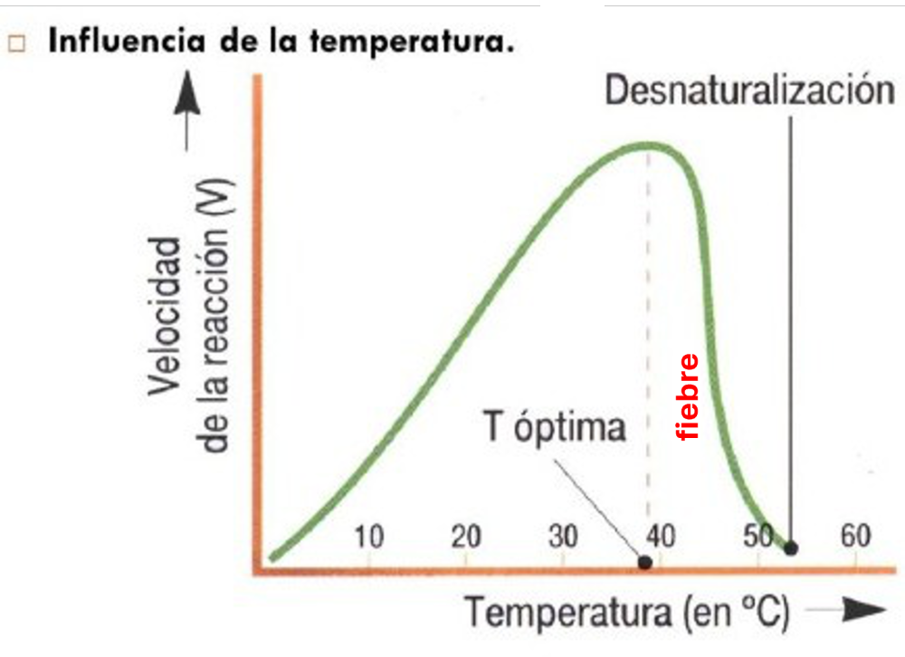
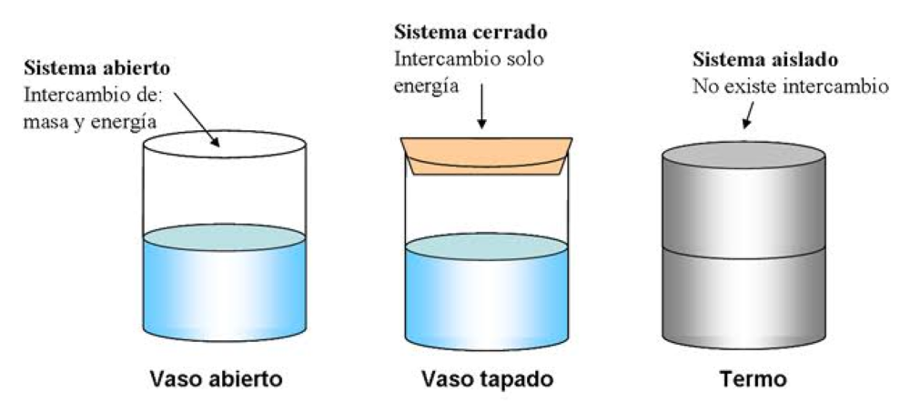
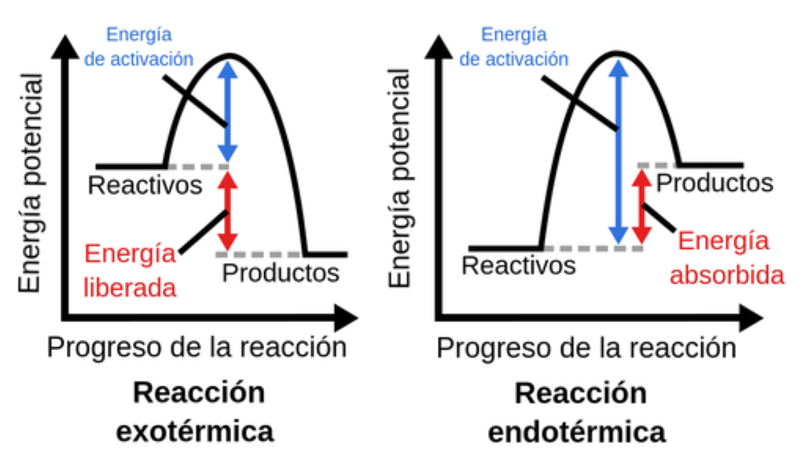
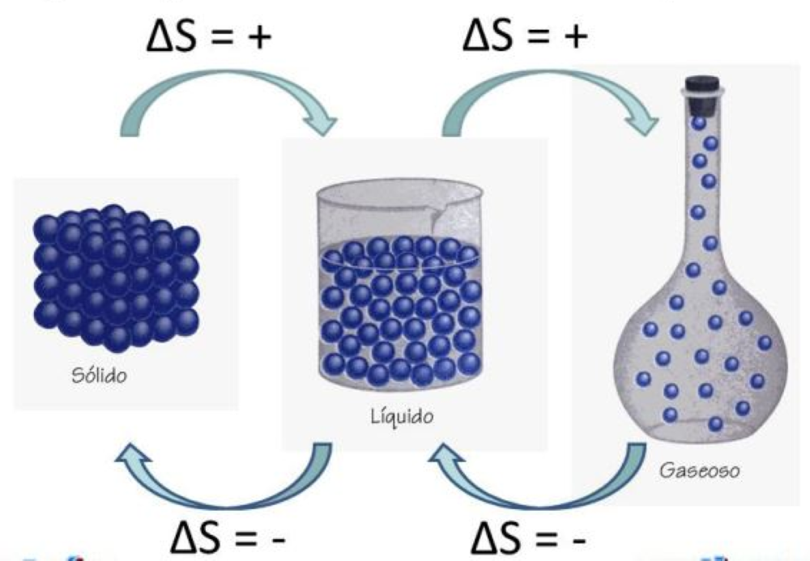
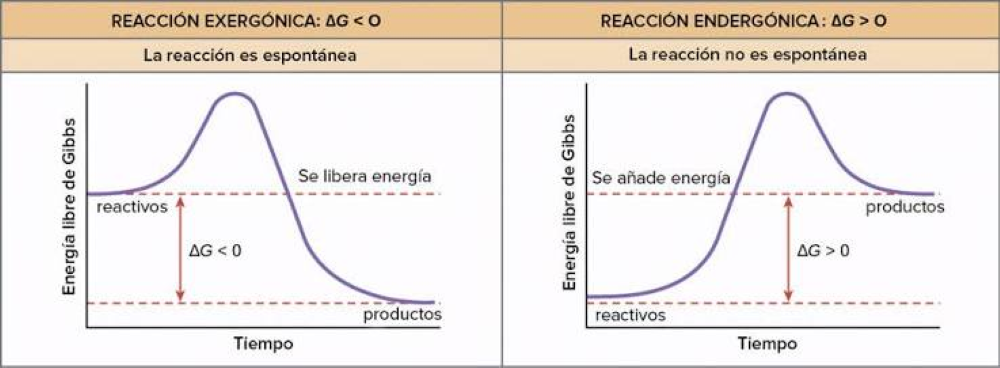
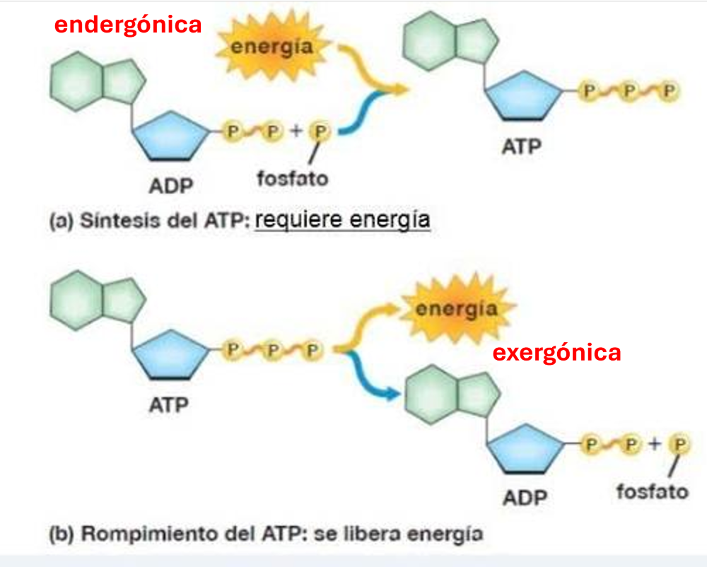
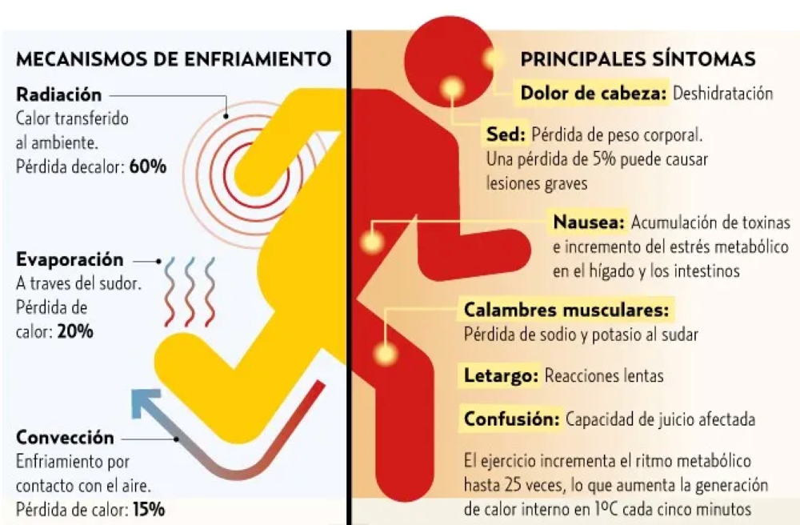
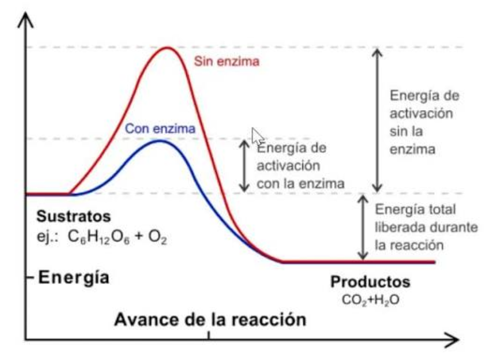

Elementos de Química
Comprender la materia - Cuidar la vida
Clase 9: Termodinámica
Comprender la materia - Cuidar la vida
Clase 9: Termodinámica

La termodinámica estudia la conversión de calor y otras formas de energía en procesos físicos y químicos.

La entalpía es el calor que un sistema intercambia con su entorno a presión constante. Es una función de estado y propiedad extensiva.

La entropía mide el desorden o aleatoriedad de un sistema. A mayor desorden, mayor entropía.

La energía libre de Gibbs es la energía útil para realizar trabajo y determinar la espontaneidad de una reacción.

La espontaneidad depende de los signos y magnitudes de ΔH y ΔS, y de la temperatura.
| ΔH | ΔS | ΔG = ΔH − TΔS | Espontaneidad |
|---|---|---|---|
| − (exotérmica) | + (aumenta desorden) | siempre − | Espontánea a cualquier T |
| + (endotérmica) | − (disminuye desorden) | siempre + | No espontánea a cualquier T |
| − (exotérmica) | − (disminuye desorden) | depende de T | Espontánea a T bajas |
| + (endotérmica) | + (aumenta desorden) | depende de T | Espontánea a T altas |
Haz clic en cada nodo para desplegar u ocultar sus ramas.
Haz clic en la tarjeta para voltearla y ver la respuesta. Luego califícate con honestidad.
Ingresa los valores de ΔH (kJ/mol), ΔS (J/K·mol) y la temperatura (K) para obtener ΔG.
Selecciona los signos de ΔH y ΔS, y la temperatura para determinar si la reacción es espontánea.
La termodinámica explica muchos fenómenos en el cuerpo humano y en la práctica clínica. Aquí algunos ejemplos sencillos y directos:



Endotérmica = absorbe calor (entra). Exotérmica = libera calor (sale).
Si ΔG < 0, la reacción es espontánea (como un "GO"). Si ΔG > 0, no es espontánea ("NO GO").
El desorden aumenta en el orden: S < L < G, por lo que ΔS > 0 en cambios de estado sólido→líquido→gas.
Reacciones exergónicas (ΔG < 0) liberan energía. Endergónicas (ΔG > 0) requieren energía.
Haz clic en cada término para ver su definición:
Error: Pensar que toda reacción exotérmica es espontánea.
Error: Calcular ΔG solo con ΔH y ΔS sin considerar la temperatura.
Error: Creer que ΔS siempre es positivo.
Error: Estudiar la termodinámica de forma aislada sin ejemplos de salud.
Error: Usar ΔH° (estándar) para condiciones diferentes.
Se mostrarán 10 preguntas al azar de un total de 30. Al finalizar, podrás cargar una nueva ronda.